Posted on December 24, 2011
by Mike Ledger
Images of small programs I wrote in C, showing off some classy CSS 3 box-shadows.
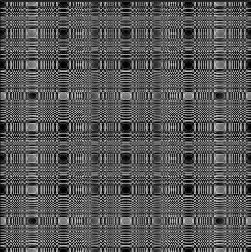 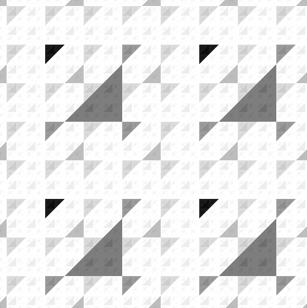 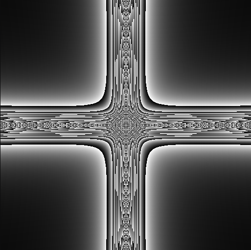 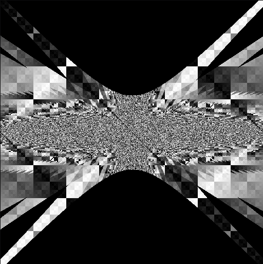  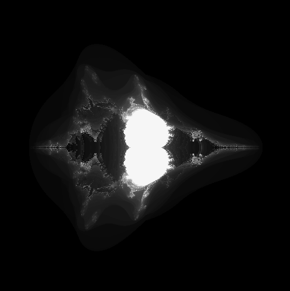 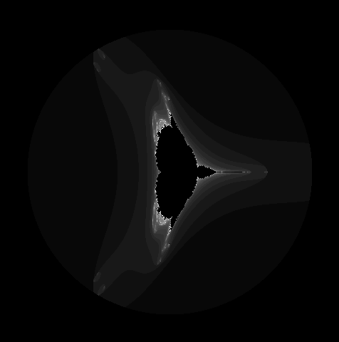 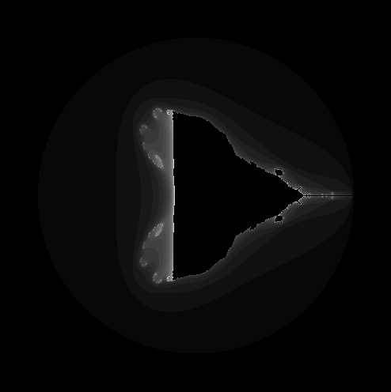 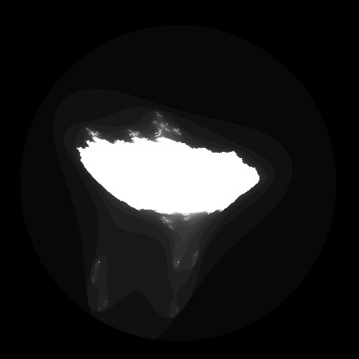 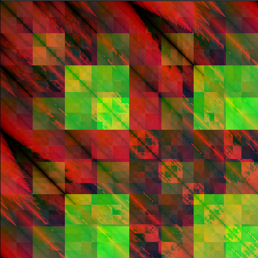 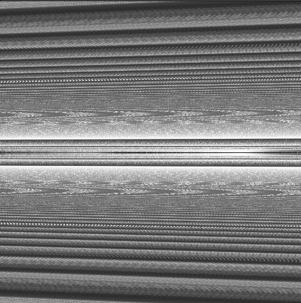 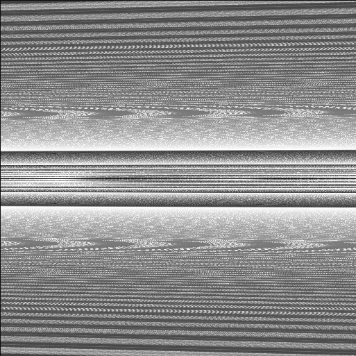 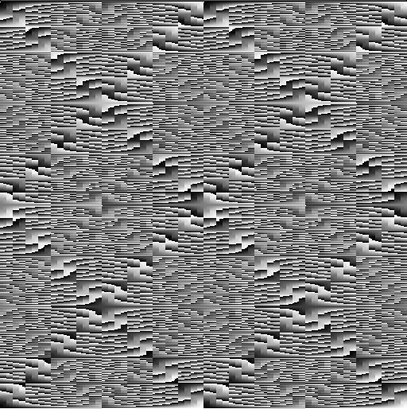 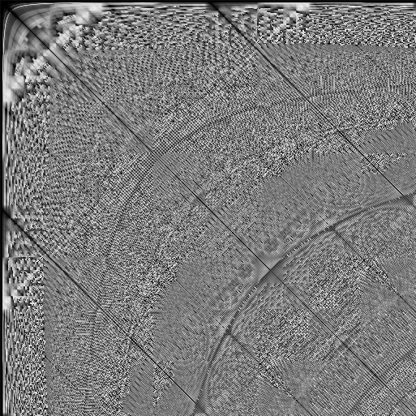 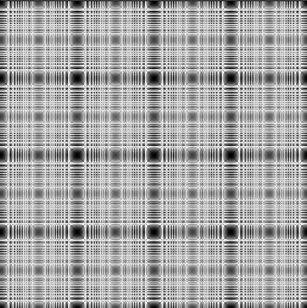
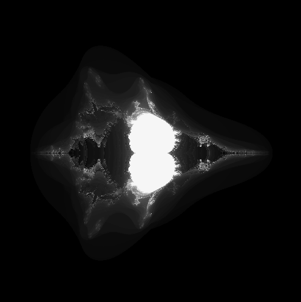 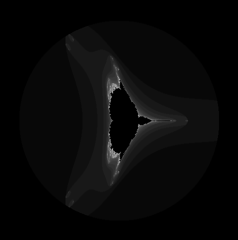 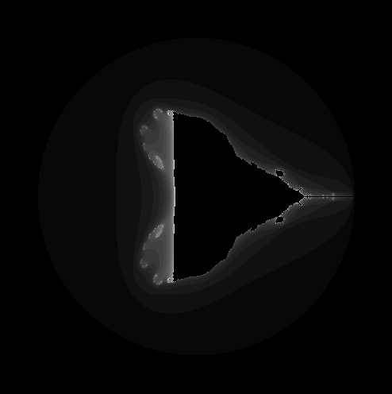 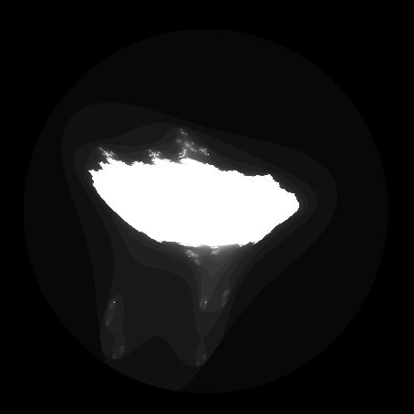 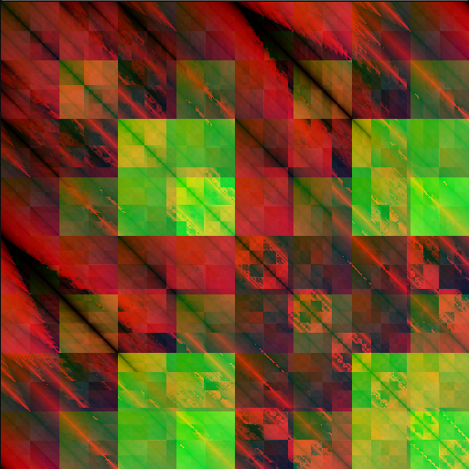 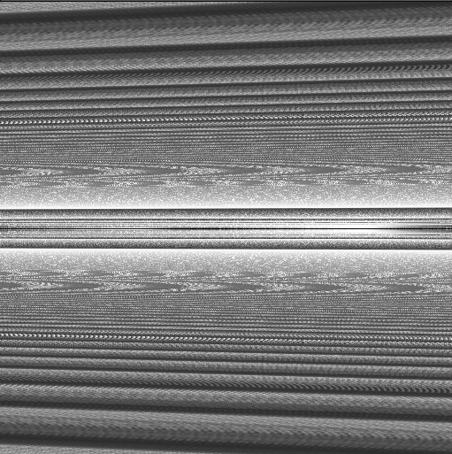 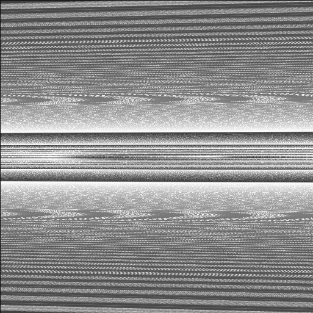 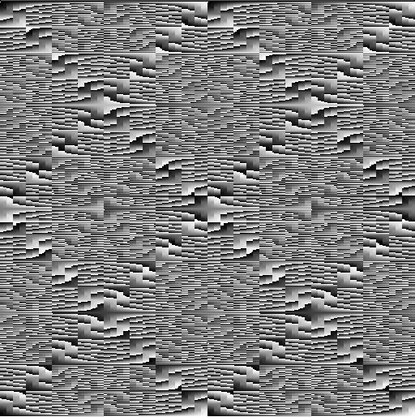 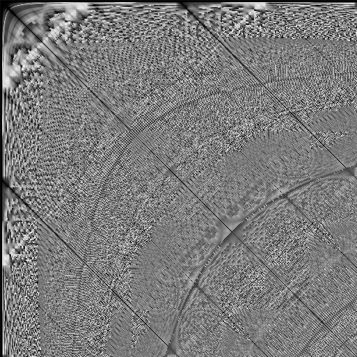 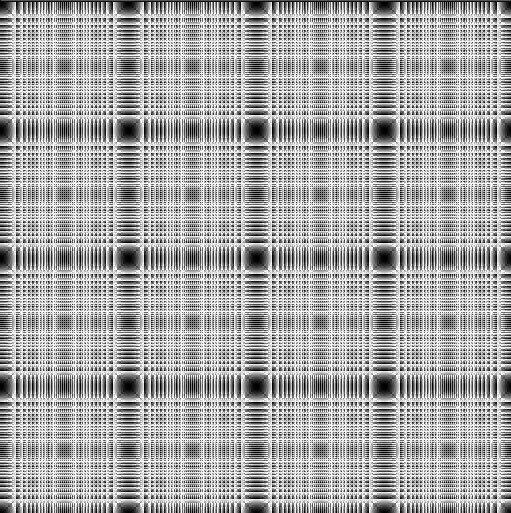
blog comments powered by Disqus
Images of small programs I wrote in C, showing off some classy CSS 3 box-shadows.
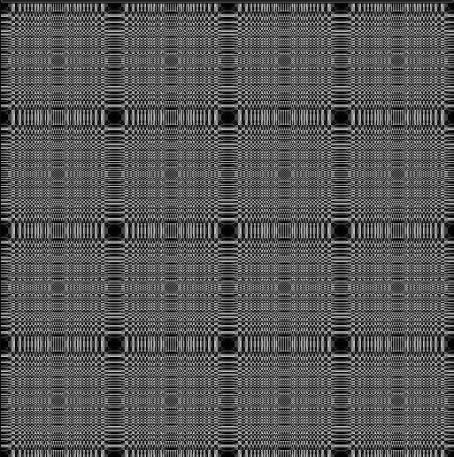 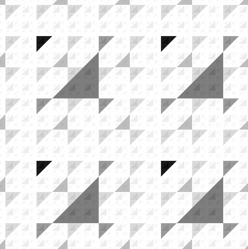 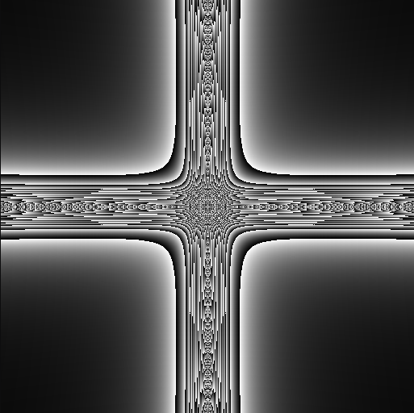 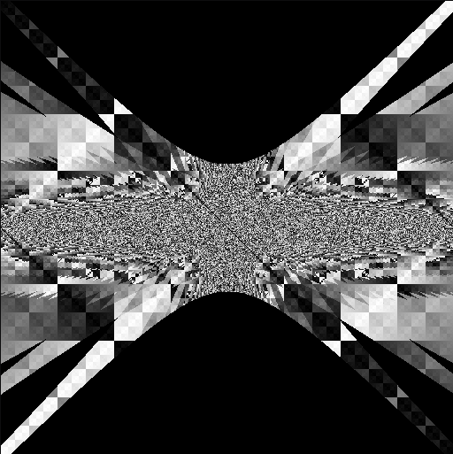 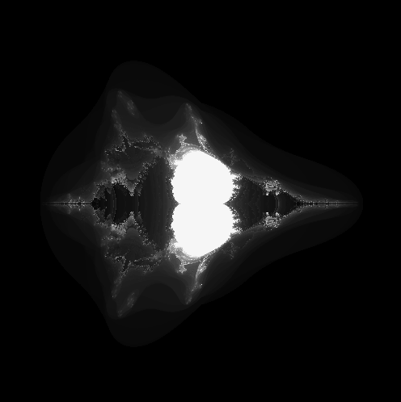 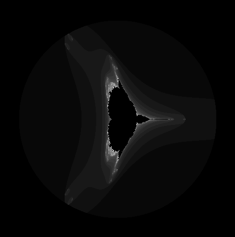 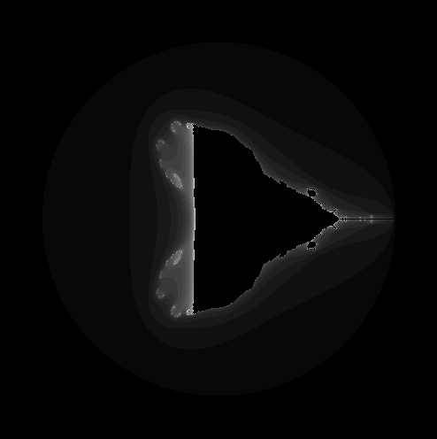 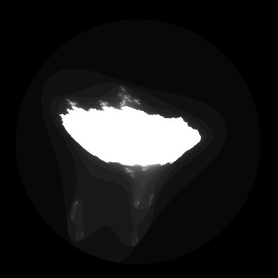 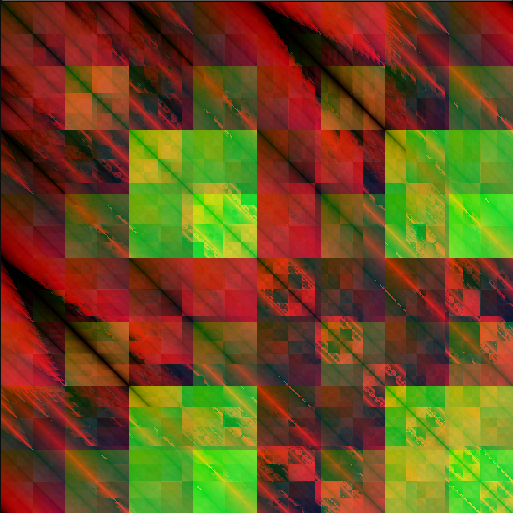 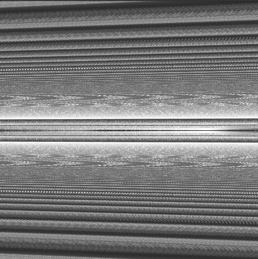 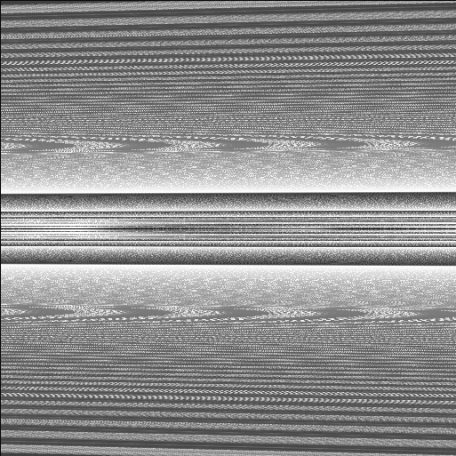 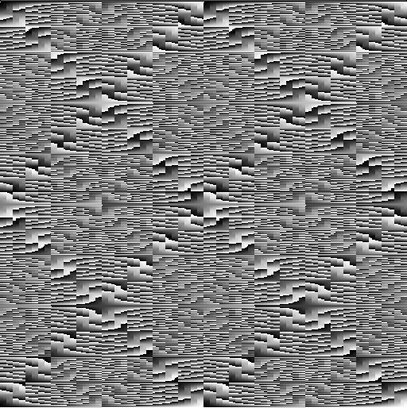 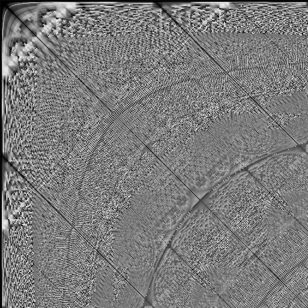 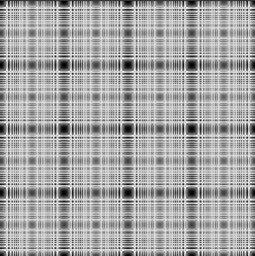